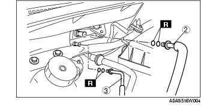
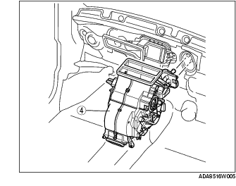

A/C unit removal/installation
1. Disconnect the negative battery cable.
2. Discharge the refrigerant from the system. (See REFRIGERANT RECOVERY.) (See REFRIGERANT CHARGING.)
3. Drain the engine coolant. (See ENGINE COOLANT REPLACEMENT [ZY].)
4. Remove the dashboard. (See DASHBOARD REMOVAL/INSTALLATION.)
5. Remove the blower unit.
- • If moisture or foreign material enters the refrigeration cycle, cooling ability will be lowered and abnormal noise will occur. Always immediately plug open fittings after removing any refrigeration cycle parts to keep moisture or foreign material out of the cycle.
6. Remove in the order indicated in the table. Do not allow compressor oil to spill.



|
1
|
Heater hose
|
|
2
|
Cooler hose (LO)
|
|
3
|
Cooler pipe
|
|
4
|
A/C unit
(See A/C Unit Installation Note.)
|
7. Install in the reverse order of removal.
8. Perform the refrigerant system performance test. (See REFRIGERANT SYSTEM PERFORMANCE TEST.)
A/C Unit Installation Note
1. When installing a new A/C unit or evaporator, add a supplemental amount of ATMOS GU10 compressor oil into the refrigerant cycle.
Supplemental amount (approx. quantity)